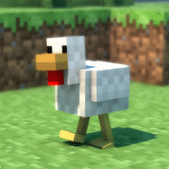
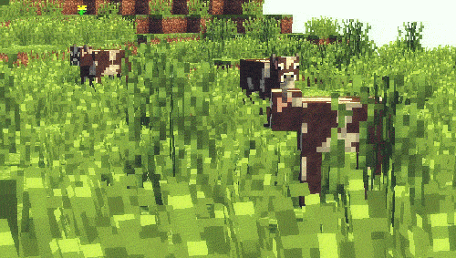
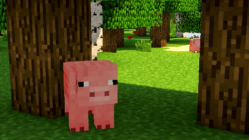
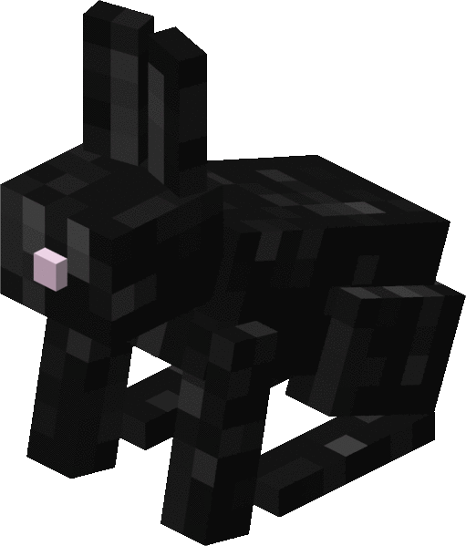
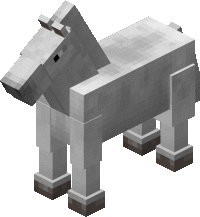

Welcome to Minecraft!
Congratulations for buying minecraft! This webpage is all about getting you started with Minecraft, so explore this webpage, and learn about Minecraft.
First things first, there are some things you need to know before you can advance.
- Lapis Lazuli is required to enchant Armour/Tools. the amount of Lapis required varies based on the enchantment.
- All Animals/Mobs mentioned below will give exp when killed.
- Each blue underlined word will redirect you to a website with further information.
Animals
This is a Chicken
When killed, it can drop Feathers, and Raw Chicken. Chickens may also lay Eggs.
This is a Cow
When killed, it can drop Leather, and Raw beef.
This is a Pig
When killed, it can drop Raw porkchop.
This is a Sheep

When killed, it can drop Wool, and Raw Mutton.
This is a Dog

When killed, it won't drop anything, but can be tamed with Rotten Flesh, and Bones.
When tamed, it can help you attack mobs, and when your dog is at low health, use Rotten Flesh to heal it.
This is a Rabbit
When killed, it can drop Raw Rabbit, and Rabbit Hide.
There is one Rabbit that is bright white and has red eyes. This is called the Killer Bunny, so stay away from it unless you have a set of armour and a weapon.
This is a Horse
When killed, it can drop Leather, Horse armour if the horse is wearing armour, and Chest if a donkey is currently holding one.
There are many more animals for you to discover, but now it is time to move on to Ores.
Html Validated, and CSS Validated